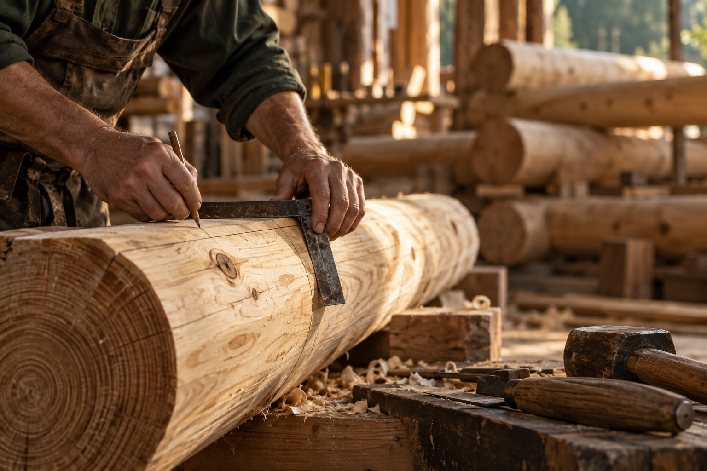
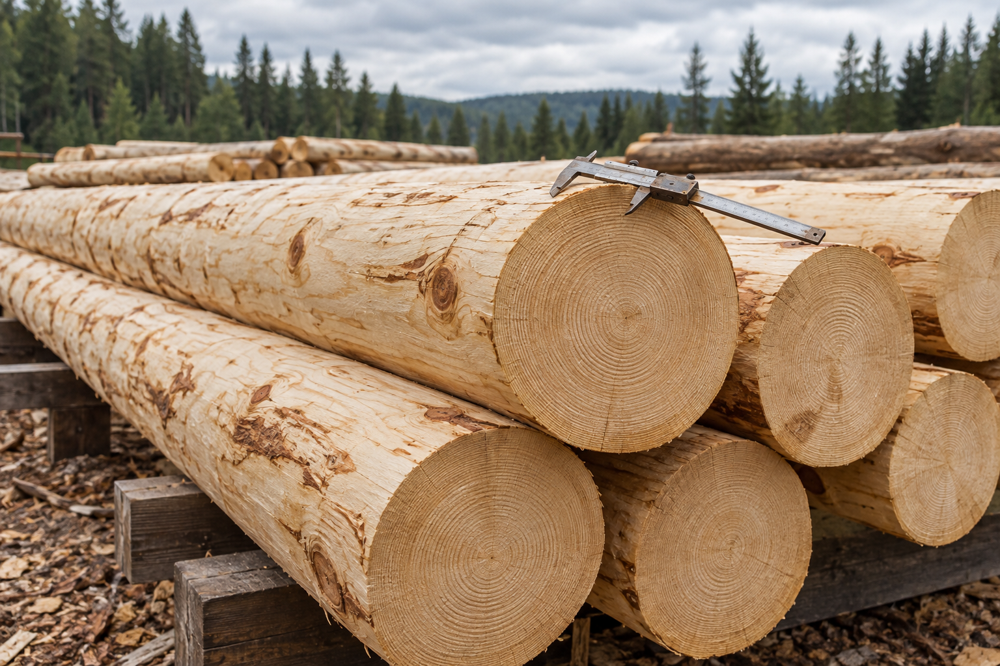
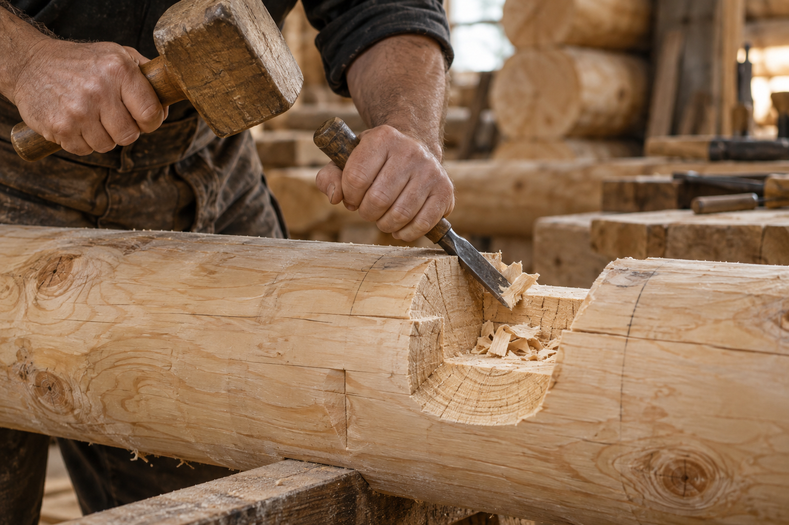
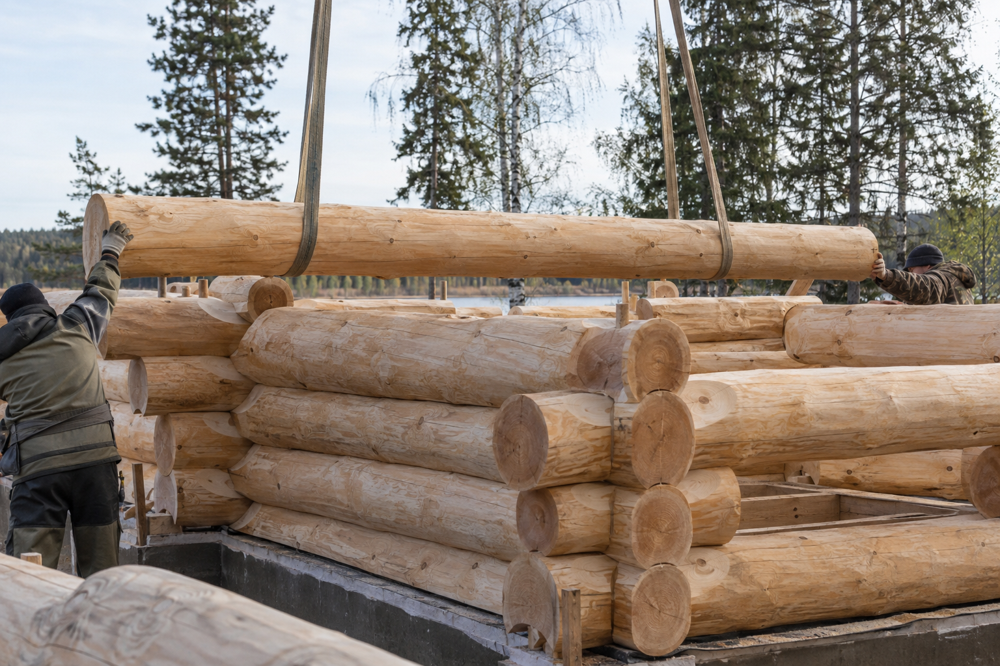
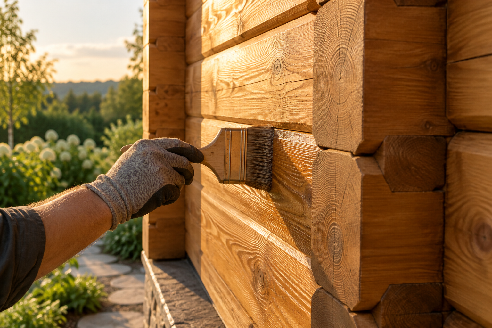

Главная / О компании
О компании
Дом начинается
с правильного решения.
«Евро‑Сруб» — строительная компания из Чухломы, Костромская область. Строим дома, бани и дачи по готовым и индивидуальным проектам.
В основе работы — бревно ручной рубки и профилированный брус, понятная комплектация и контроль ключевых решений на каждом этапе.

с точности материала
Как работаем
Полный цикл.
Одна команда.
Берём на себя фундамент, изготовление и монтаж сруба, кровлю и отделку. Объект ведётся последовательно: состав работ согласован заранее, а ключевые этапы контролирует одна команда.
Точная цена — за ту работу, которую действительно выполняют профессиональные строители.Посмотреть реальные фоторепортажи
Этапы строительства
От материала
до готового дома
Строительство устроено как единый маршрут: выбор решения, изготовление, монтаж, защита дома и отделка.

01
Материал
Бревно ручной рубки или профилированный брус под задачу дома.

02
Изготовление
Ручная рубка сруба или подготовка стенового комплекта.

03
Монтаж
Фундамент, сборка стен и кровельные работы на участке.

04
Завершение
Отделка и защита древесины после усадки дома.
Реальные объекты
Результат можно
увидеть в работе
В фоторепортажах собраны готовые объекты, этапы строительства и детали, по которым можно оценить реальную работу команды.
Чухлома
Костромская область
Родина ремесла
Дерево, с которого
начинается дом
«Евро‑Сруб» работает в Чухломе, Костромская область. Здесь формируется сруб, собирается комплектация и начинается путь будущего дома или бани.
Бревно ручной рубкиПрофилированный брусГотовые проектыИндивидуальные решения
Обсудить проектНачать разговор